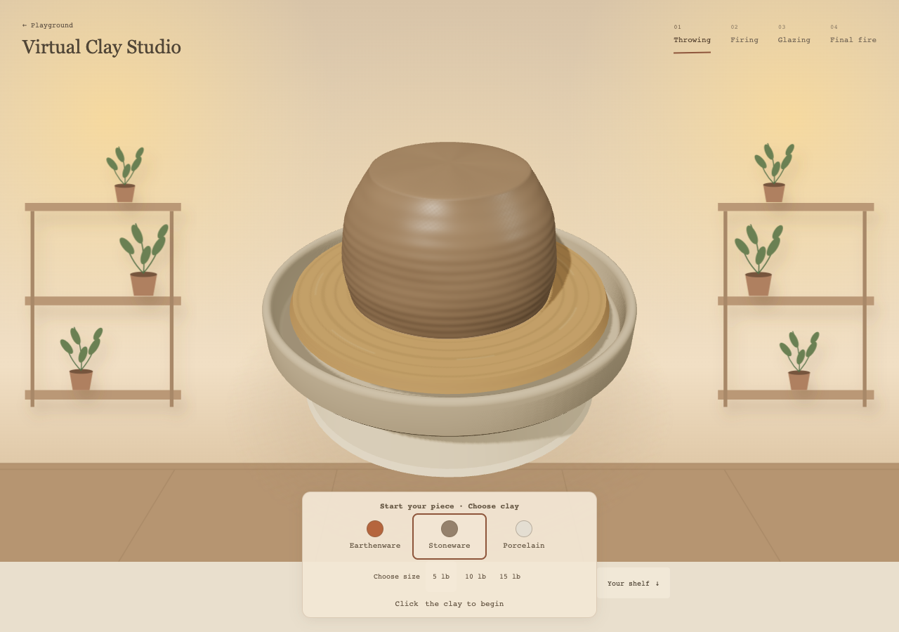
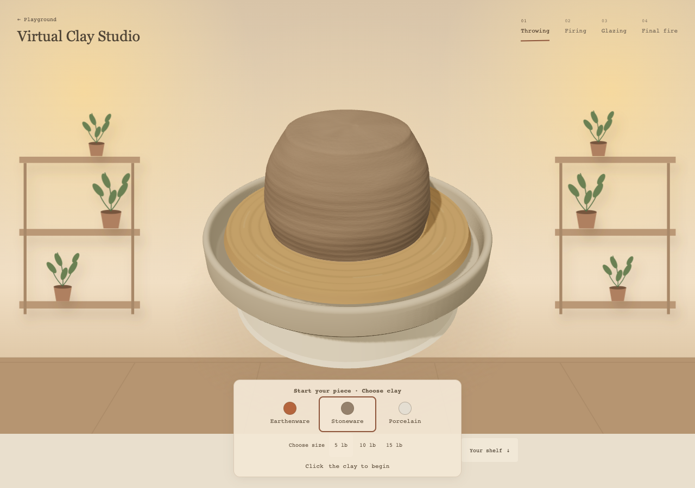
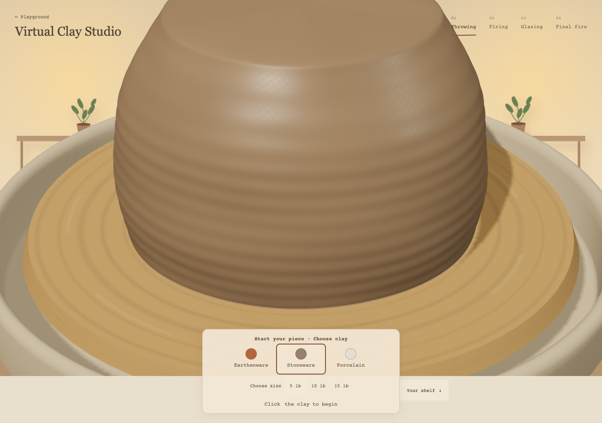
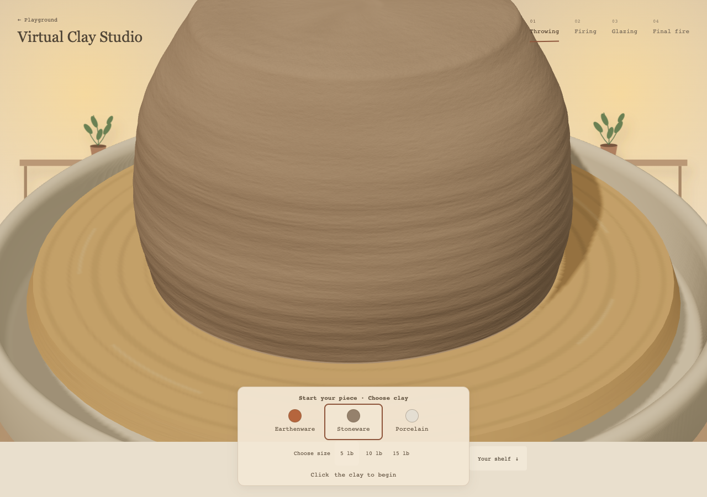
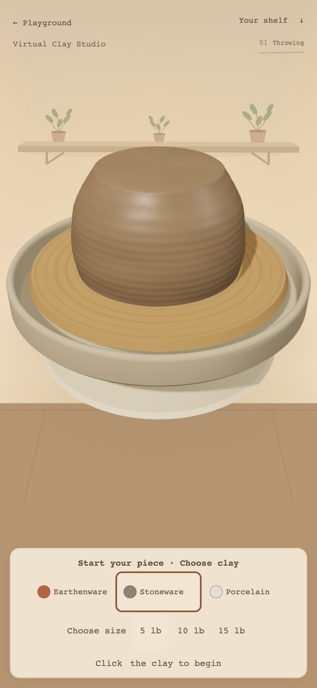
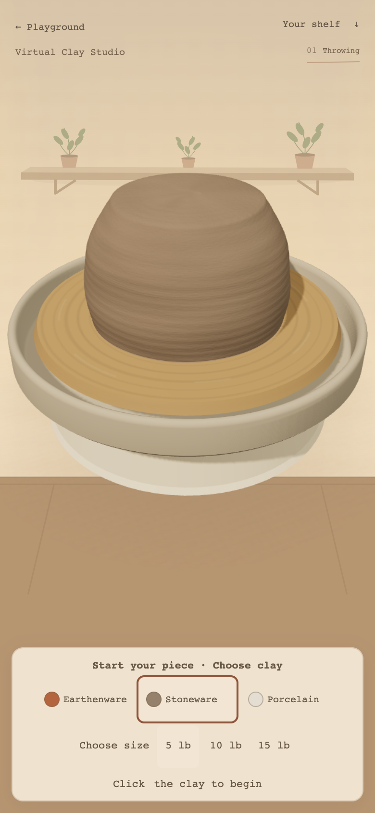
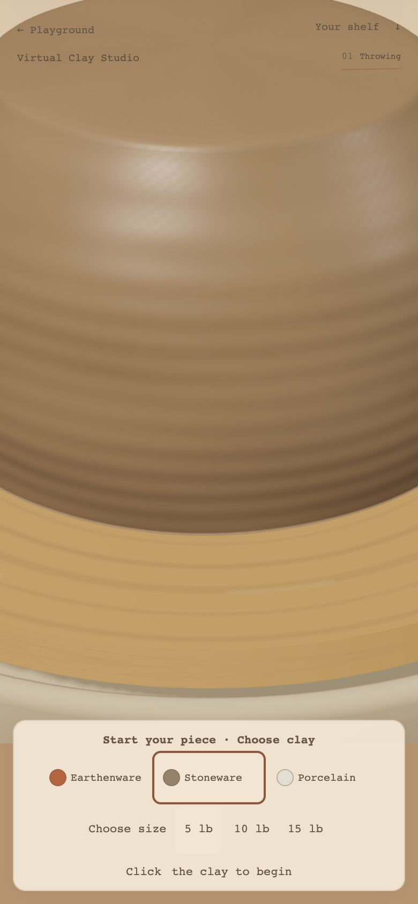
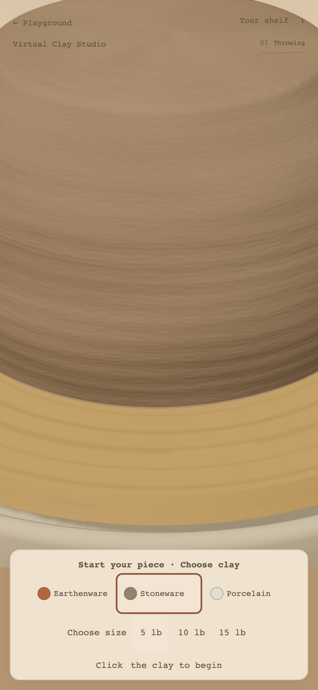

Local review only. Same camera, clay, lighting and UI. Close-ups use a test-only 2.6× camera zoom. No tool, phase, history, wall or glaze-firing changes.








Chrome on this Mac, phone viewport 390×844, DPR 2 (renderer capped at 1.65), CPU throttled 4×. Median and p95 frame time ~16.7 ms before and after over 170 retained samples. This is not physical mid-range phone testing. Three 1024px maps add ~4.6 MB transfer and ~16 MiB GPU storage including mipmaps; cold network loading remains a risk. No next checkpoint started.